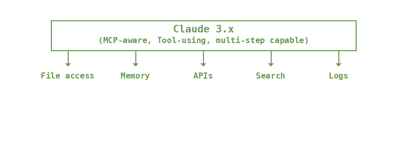

If you are building with large language models, you might have seen a quiet little acronym floating through the more technically sophisticated corners of the LLM space: MCP. It stands for Model Context Protocol, and it is the new standard from Anthropic that lets models like Claude interact with tools, files, APIs, memory, and more. OpenAI just announced support as well. So buckle up. This is not a side feature. It is the future.
What is MCP?
Let us be clear. MCP is not just "tool use." It is a declarative interface that lets LLMs say, "Here is what I need. You (the host) fetch it, validate it, and return it, and I will take it from there." Think of it as a universal adapter: instead of stuffing all the context into your prompt and praying the model makes sense of it, the model can now request context on demand via a standard interface. It is like system calls for LLMs. Claude 3.x already supports this. OpenAI is rolling it into their tooling. And if you are still hardcoding everything into the prompt? You are now the old guard.

Implications for LLM App Authors
Tool use sounds simple, but MCP makes it the model's job to orchestrate, not yours.
This changes your role. Your code is not the master of puppets anymore. It is the platform engineer behind the assistant:
- You define which tools the model can call.
- You control what memory is available.
- You validate what comes in and what goes out.
Most importantly: You stop jamming the entire universe into a single prompt. You give the model a clean, structured way to pull in only what it needs.
It is a shift from stuffing to streaming. From babysitting to enabling.
How Memory Works Today (And Why It Is Cracking)
Right now, most developers building LLM apps use something like this:
- Store chat history, maybe vector-embed it.
- Dump the most recent N messages or files into the prompt.
- Maybe score based on keyword or cosine similarity.
It is brute force.
You are guessing what the model might need. And you are paying for every guess in latency, token costs, and hallucination risk.
And let us be honest: it does not work terribly well.
How Memory Works Post-MCP
In a world where the model can request memory, not just consume it:
- You do not give it a dump. You give it search and access.
- You do not embed everything. You organize it by topic and use-case.
- You do not trust the model to sort junk from gold. You rank, gate, and summarize before it ever sees it.
Memory becomes less like a bookshelf and more like a librarian. Context is fetched by the model, but you control the catalog. You need systems that:
- Understand topicality
- Maintain summaries at different granularities
- Prioritize what is useful to this conversation, not just the last one
If you are building an app and you do not have a memory strategy yet? You are going to feel this fast.
Beyond Tool Use: The New Generation of LLM Apps
MCP does not just let models call tools.
It allows a new architecture for LLM applications:
- Models that plan
- Fetch what they need
- Take multi-step actions
- Build context over time
But only if you give them clean, relevant information. MCP is the wire protocol. You are still the operating system.
If you control the memory, the tools, the access—you shape the agent.
And that is the real story: the apps that thrive in the next generation will not be the ones with the flashiest UI. They will be the ones that give their models the right context at the right time.
We are building toward that at vybestack.dev. If you are thinking about memory, topicality, attention control, and how to build AI-first development tools that do not just wrap models but work with them, you are thinking like we are.
Because the future is not stuffing everything into a prompt.
The future is letting the model ask.
And making sure it asks the right questions.